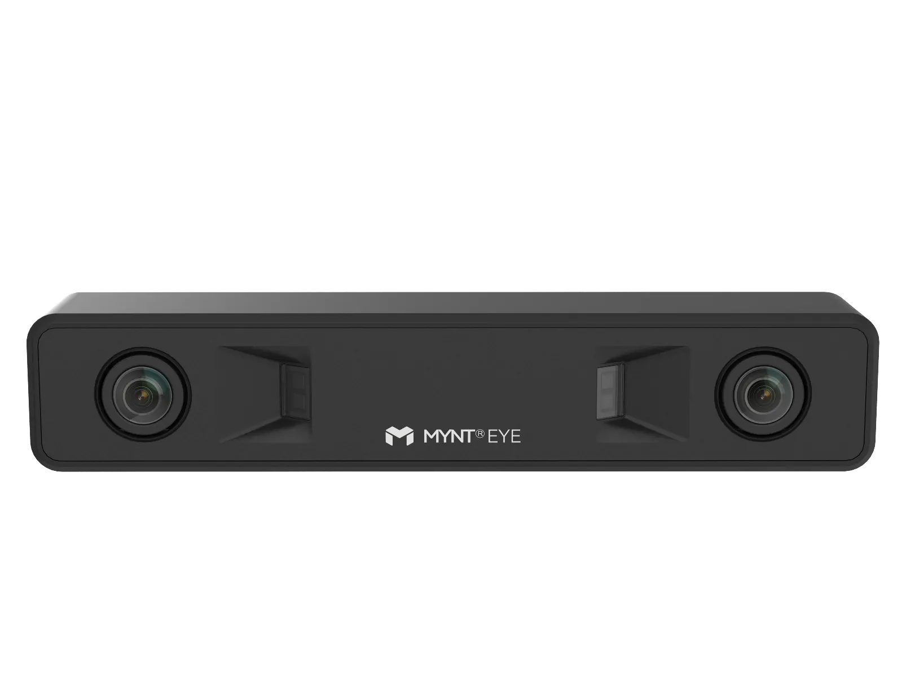
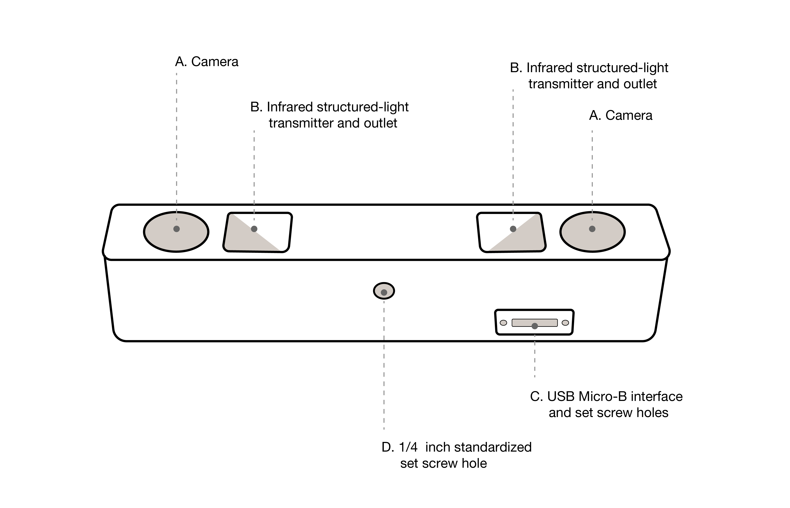
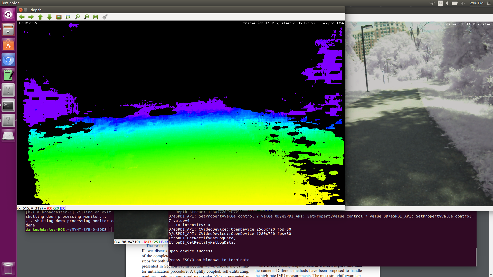
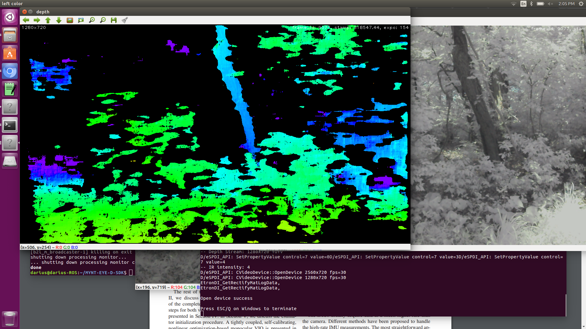
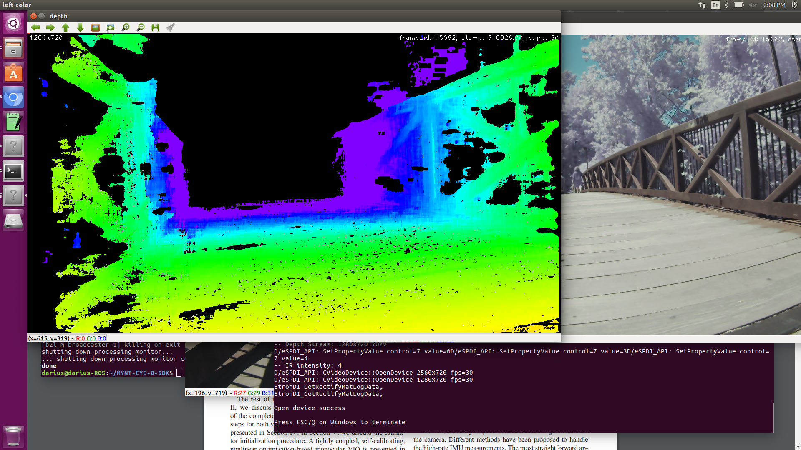
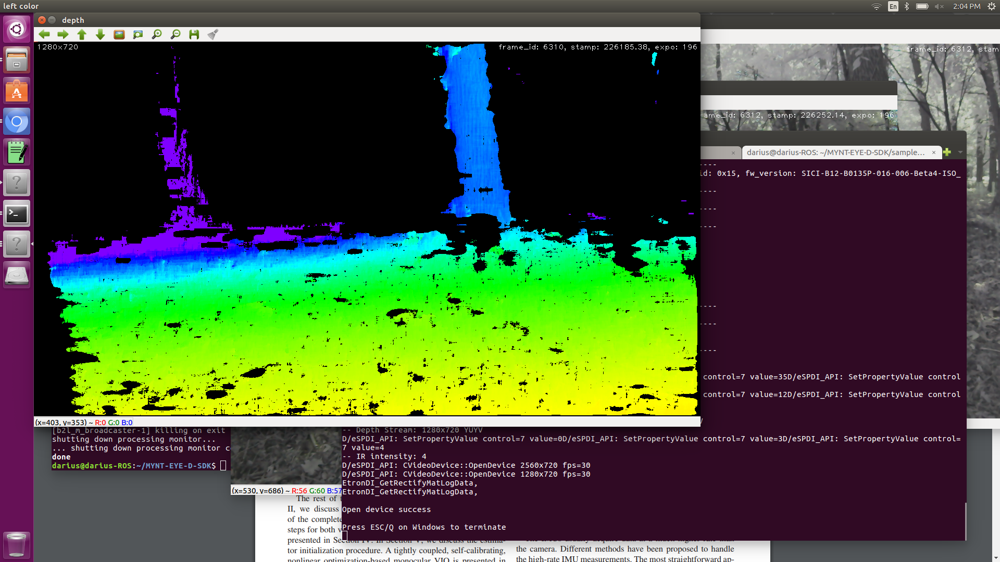
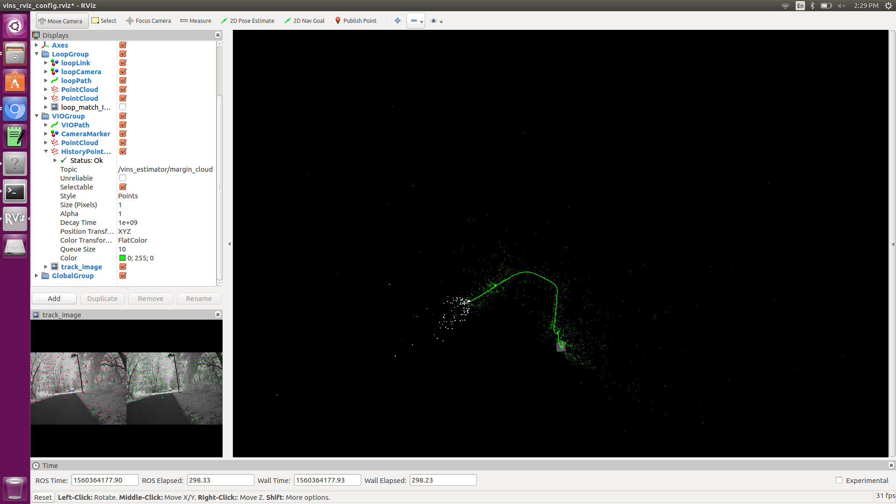
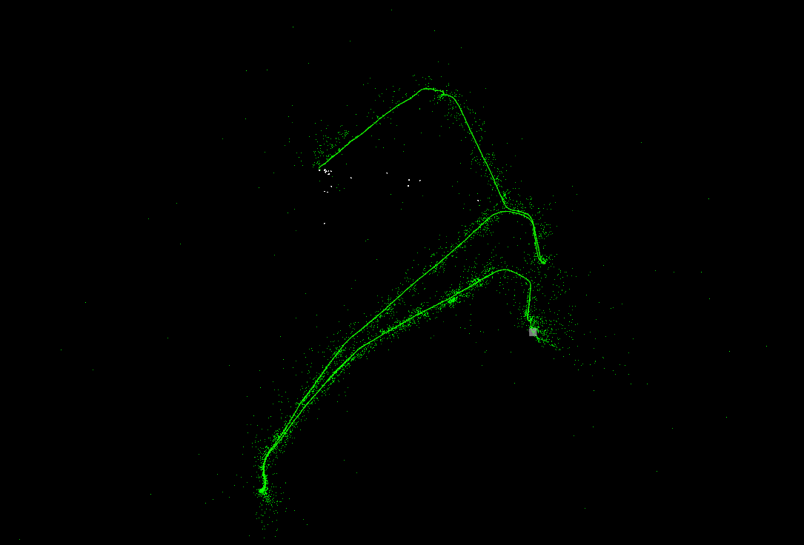
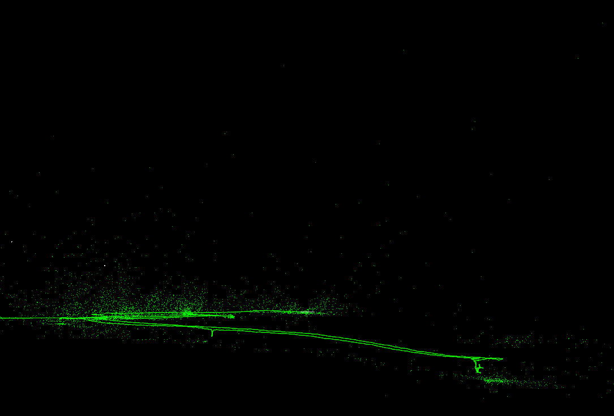

The Mynt Eye D stereo depth camera is a medium-range sensor capable of capturing an image
of the environment as well as depth information. The depth data can be displayed in a variety of
fashions, including as a point cloud, where each pixel has color and position. In that sense, it is
like a LIDAR array that also captures color. The Mynt Eye also contains an integrated IMU which is great
for doing visual-inertial odometry.
Pros:
- Captures color and depth
- Computed depth data onboard
- Can perform stereo visual-intertial odometry rather well
- Nice pre-written ROS packages that publish the color, depth, point data, etc.
- Works well indoors and outdoors
- Works well in a variety of lighting conditions
- Works best when the environment contains more organic shapes, as opposed to LIDAR
Cons:
- Has issues with mono-color walls if they are more than ~2m away (based on preliminary testing)
- While the cameras can operate at up to 60fps, it cannot get the full point cloud at that
rate, and a more reasonable expectation would be 15-30fps
- Requires USB 3.0 for most applications and uses that bandwidth
- Processing point cloud data (or at least displaying it) is computationally intensive
- Limited range and precision compared to high-end LIDAR systems
- The SDK it uses requires that the host be running a 64-bit OS, which limits which single
board computers it can be used with
Example depth data:




Example visual-inertial odometry data using VINS-Fusion in an outdoor environment:


